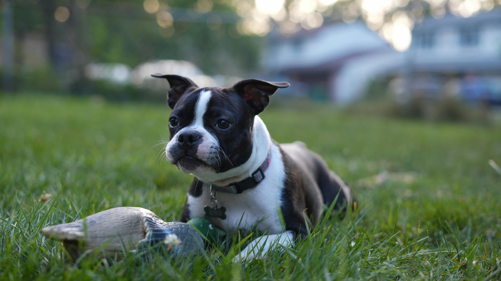

Hi! My name is Adriana Chase and I made this website to share what I’ve learned about Boston Terriers.
Boston Terriers are my favorite kind of dog. They’re sweet, playful, and great for all kinds of people.
The cost of getting a Boston Terrier can range from $600 to $1,200 depending on where you look.
On this site, I’ll talk about: